Super Cool Nice Antivirus 2025 Edition (SCNAV 2025) Online Helpful Documentation
This manual is regular updated. It currently represents SCNAV 2025 version 1.05 Hot Fix 2
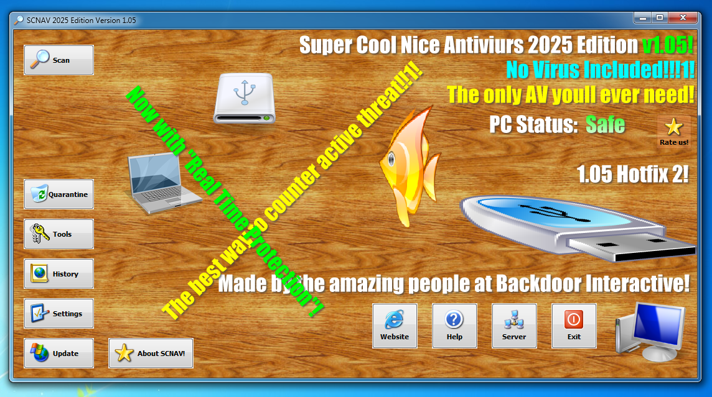
Image caption -- SCNAV 2025 Running on Windows 7
Part 1 - The userinterface
SCNAV's userinterface is so simple to use, even a todler could understand it
Here is the main menu. below is an image with all the buttons numbered and what they do
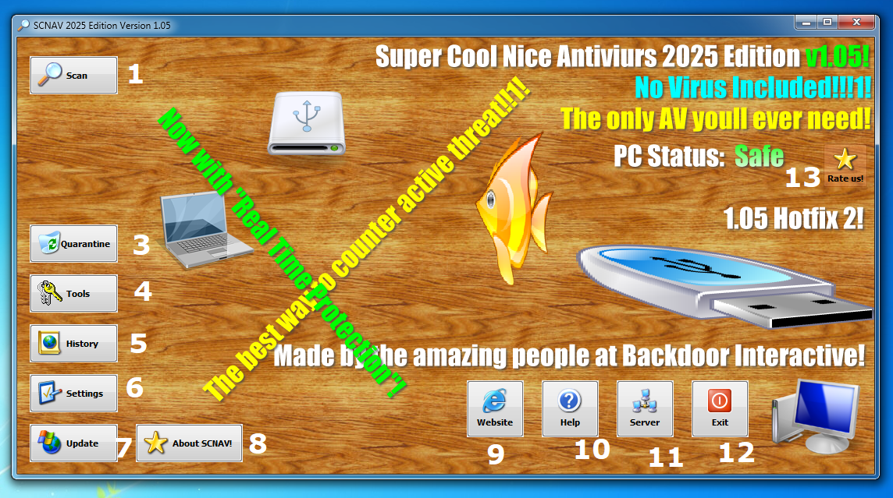
Note that some button features may not be available. they will be in a later update
1 - Go to the Scan page
2 - We dont like this number, so we didnt include it (lol)
3 - Go to the Quarentine Page
4 - Open the Toolbox
5 - View a history of previous scans
6 - Change SCNAV's Settings (Such as Real Time Protection and Low Ram Mode)
7 - Check for updates
8 - Credits / About SCNAV
9 - Open the offical SCNAV Website!
10 - Open the SCNAV Online Help Manual (This website)
11 - Open Local SCNAV Server Terminal
13 - The Random Pointless "Rate us!" button
Part 2 - The Scan!!! page
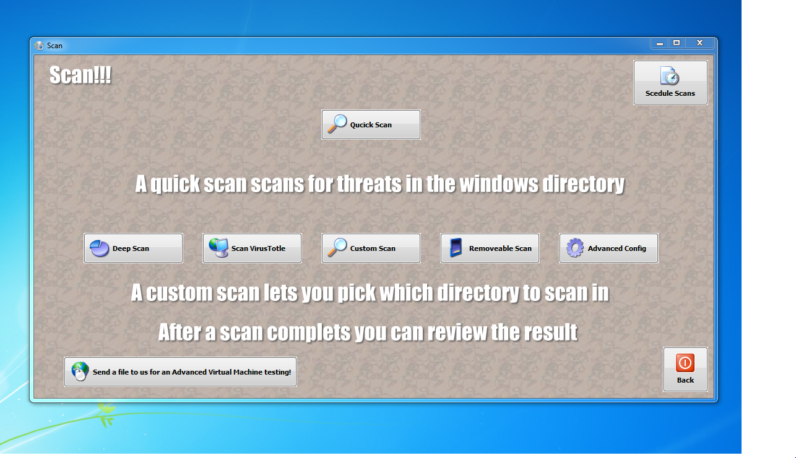
The Scan!!! page is simple and easy to use with its large buttons
1 - Qucick Scan
that is purposly mis-spelled lmao
The Qucick Scan button will start initiate a Scan in the C:\Windows Directory
Be aware that Qucick Scan may detect false positives
When you perform a scan this happens!
A UAC Permission Request Dialog Prompt may popup when you start a scan. Please grant scan.exe administraive perms apon request in order to scan
Once you accept the permission request SCNAV will start to initiate the scan!!!
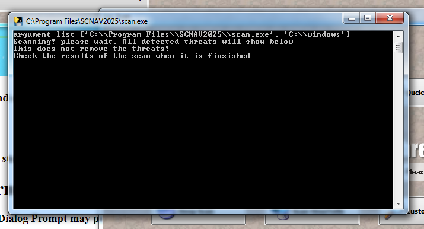
As it shows in the picture SCAN.exe (The virus scanner) Will NOT Delete any files it detects as a threat
it simply writes a record containing the threats file location and filename in SCNAV's quarentine
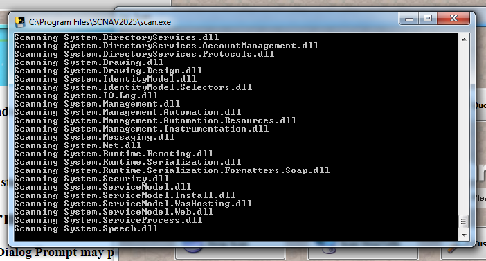
As the scanner checks the hashes of all the files in the directory it will display the file its scanning on the screen
When it detecs a threat it will write information to a txt doucment in C:/Program Files/SCNAV2025/threats.txt and threatsexe.txt
This is SCNAV'S Quarentine
What happens after a Scan
After the virus scan has finished SCNAV will pop up saying "Scan Finished" And the scan Results button will appear!
Note: If you did a custom SCAN: The results button may show even while the scan is still in progress. Please make sure the scan has finished before entering the scan results page
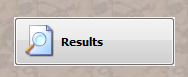
Scan results! page (A.K.A The Threat Removeal Page)
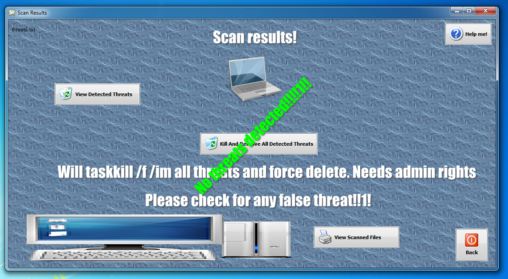

Here you can use delete the threats viruses and malware scnav has detected
If there were no threats detected. A large green lable will block the Delete and remove all detected threats button (Kinda like a Master arm cover!)
If there were threats detected in the previous scan. The Delete and remove all detected threats button will be available to click
First its recomended that you check what threats SCNAV has detected. Click the View Detected Threats button
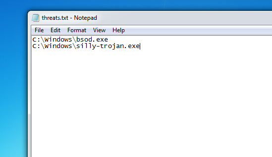
If SCNAV did not detect any threats. you will get an error when clicking the button
This error means that threats.txt does not exist (therefore, there were no threats detected in the last scan)
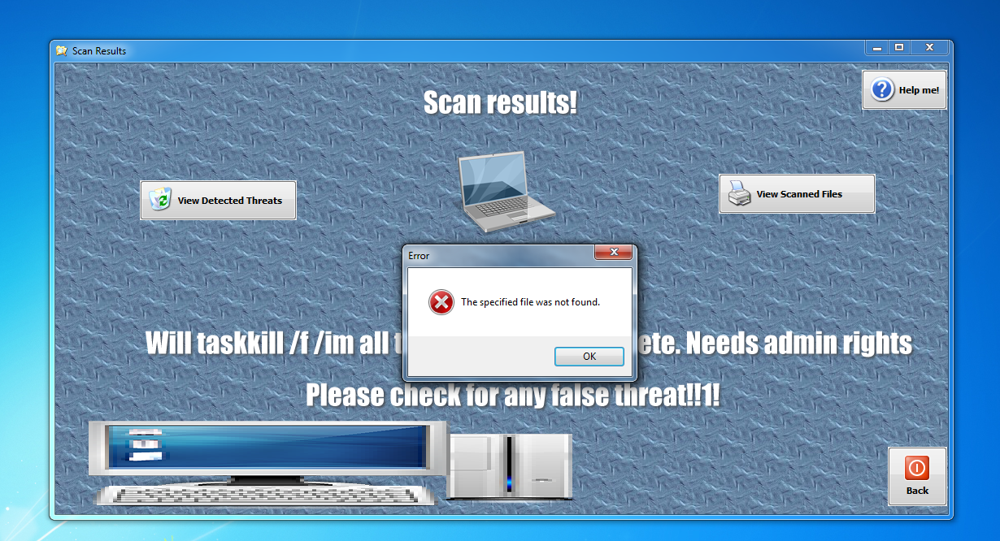
OK! now delete the malware it detected please!!!!
First slow down. Check to make sure that the "threats" detected are actually threats. This can be randomly named EXE files and many more etc
To delete all the detected threats off your computer: Very simply Click the Kill And Remove All Detected Threats button
This will open remove.exe -- SCNAV's virus remover
remove.exe will request admin permissions just like scan.exe
once accepted remove will first kill all Exe's detected as a threat Via Taskkill /f /im. This can stop actively running viruses Like the MEMZ trojan. and it can stop any RATs running on your system aswell
Once the threat is dead. It will attempt to delete the threat in 3 methods. Method 2 will most likely work Depending on your system hardware/software
If everything has succeded. The threat has been deleted! Thats it! Simple right?
Now lets look at some other cool features in the Scan!!! menu
3 - Deep Scan
The Deep Scan button will start a virus scan on the whole C:\ drive
Note: a warning will pop up asking if your sure you want to scan here. it will take a while
4 - Scan VirusTotle (This feature is broken. we are working on a Fix)
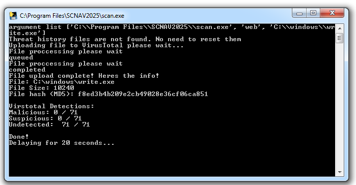
This button will open up a prompt for a path to a file. to use this correctly make sure you enter the path with quotes ("")
Example: "C:\Users\SCNAVUSER\Downloads\sillyfunnymalwarelmao.exe"
Example: (Continued) "D:\MyPortablefiles\bsod.exe"
Then it will scan that file useing VirusTotal's (C) API
Please do not abuse this feature as the virus total functionality may be taken away
5 - Custom Scan
This button opens a prompt that allows you to start a virus scan in a custom directory
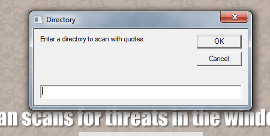
You can choose which directory the scanner will start in by listing the directory with quotes ("")
6 - Removeable Scan
This button allows you to scan for viruses on a removeable drirve
Part 3 - SCNAV Server Addon
This feature will allow you to remotely control SCNAV on your local network
First on the server computer click the Server button on the mainmenu
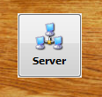
Once you click it, the servers console will open
Client SCNAV
On the device you want to remotely control SCNAV from open up the netconf.txt for the Clients network config in C:\Program Files\SCNAV2025\netconf.txt
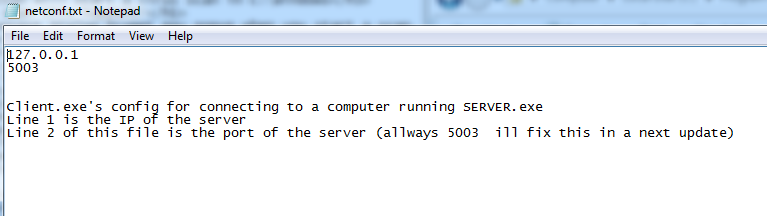
The first line of the file is the Server computer's network computer name (You can use 127.0.0.1 if your testing locally. but it wont take other IP's. Use Computer Names instead)
The second line is the port
Make sure the server is running on the server computer before you start the client
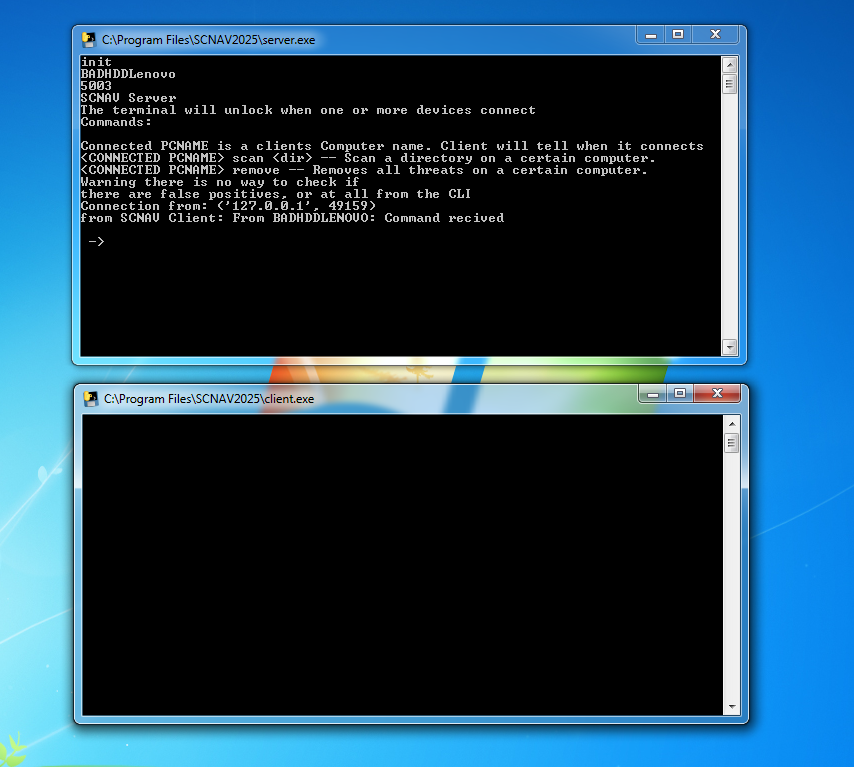
Part 4 - More Cool Features
SCNAV Settings
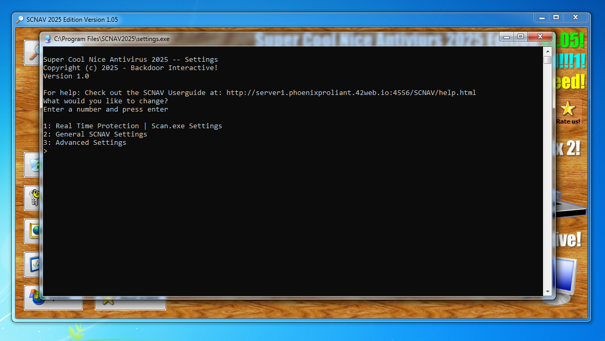
With SCNAV Settings: You can Enable/Disable Real Time Protection. Or you can Enable or Disable Low Ram Mode
SCNAV Tools!
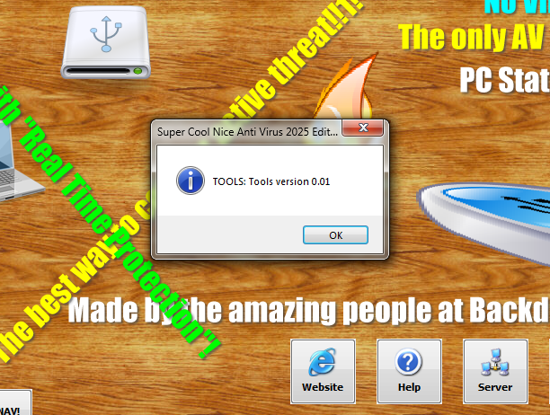
The SCNAV Toolbox! is a feature which employs some other small features
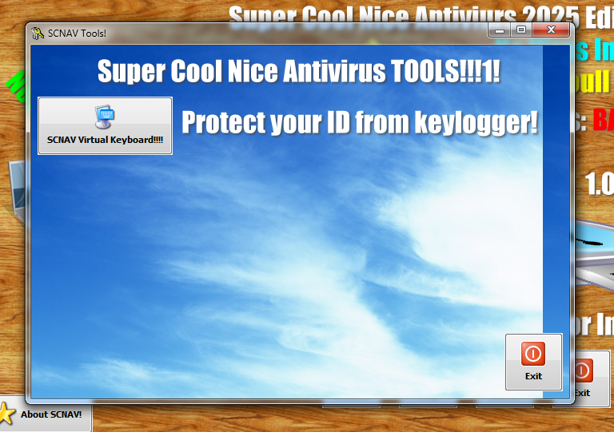
We only have a Virutal Keyboard Tool here for now. But if you would like to contribute to the tool box. Reach out to me on discord! My username : ilovehewlettpackard.com
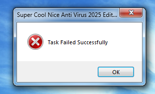
As you can see the exit button is working as expected